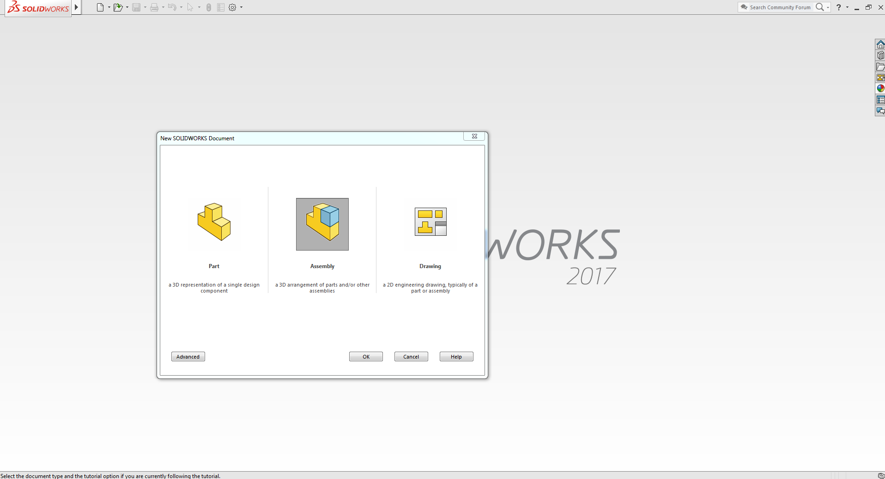
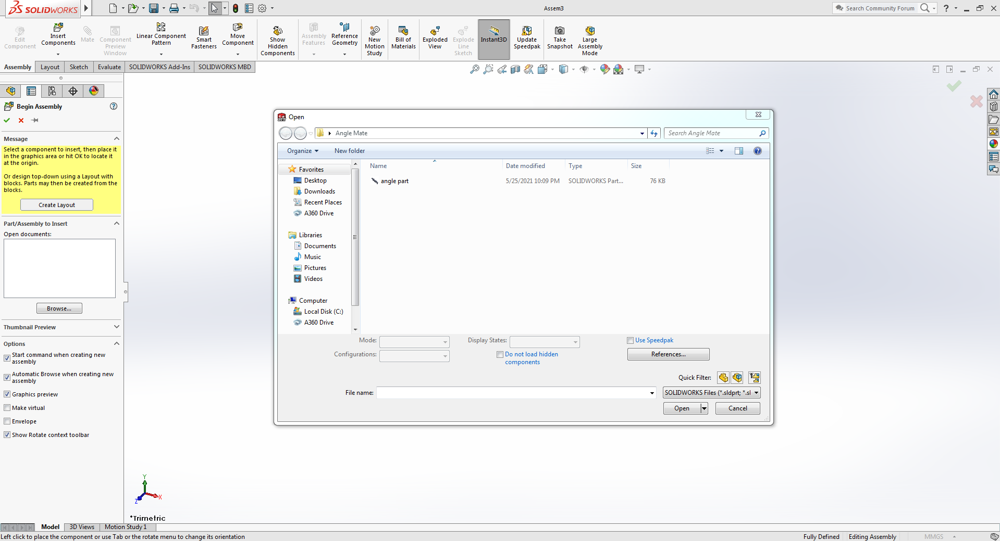
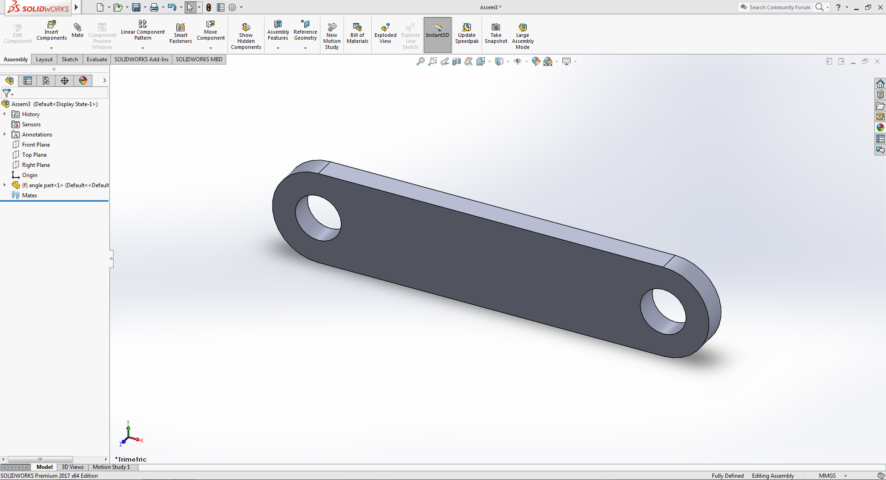
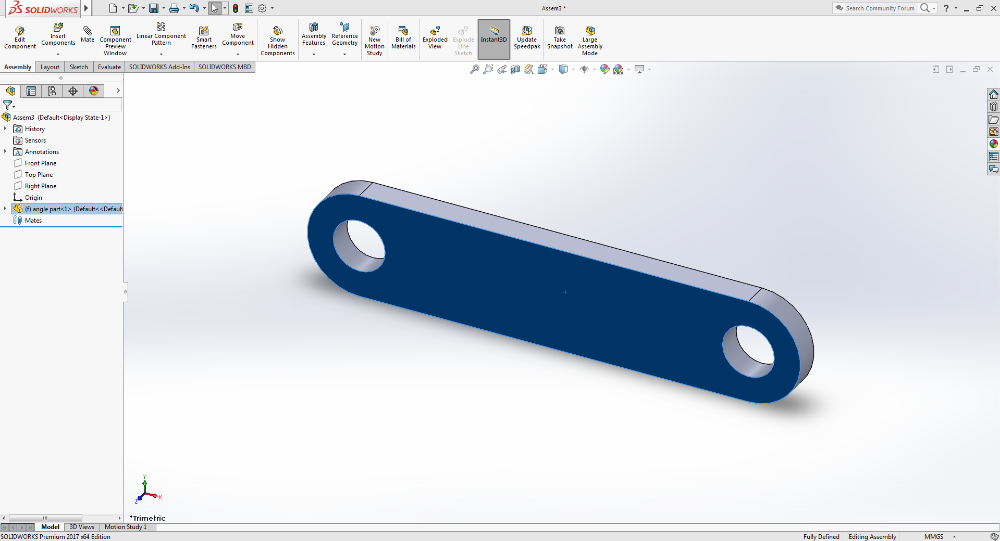
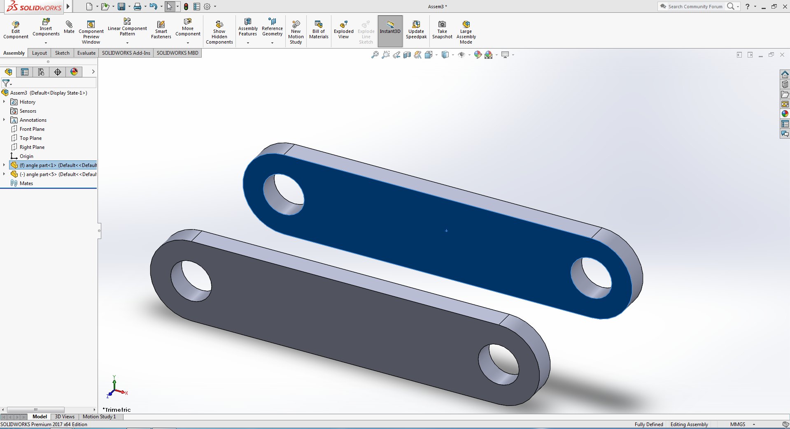
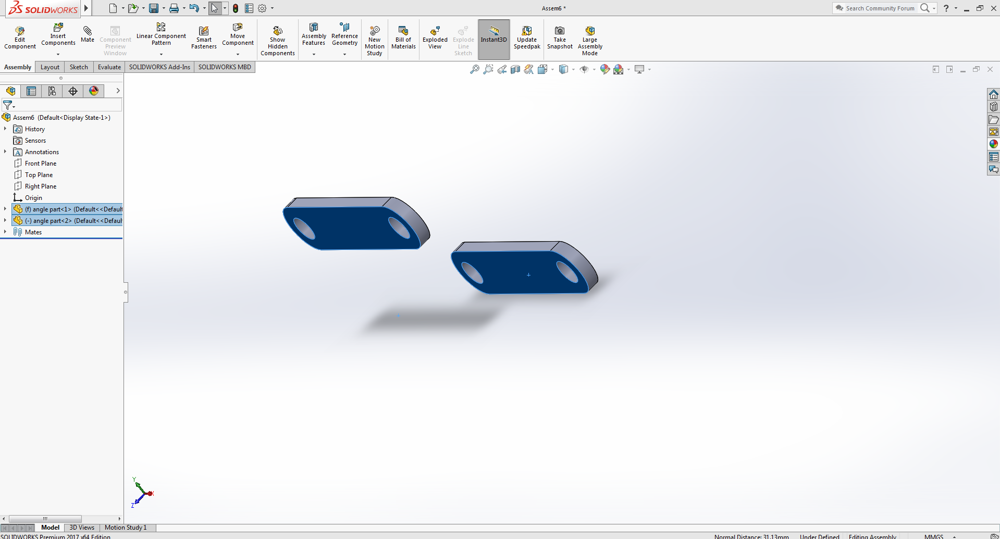
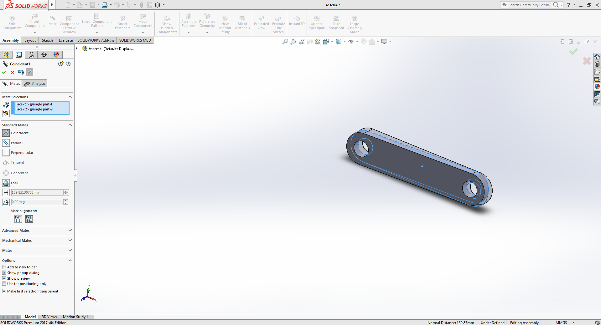

Coincident Mate
Positions selected planes, edges, and faces on the same infinite plane. If two vertices are chosen then the "Coincident mate" will orient them such as they touch each other.
Example:
Download Example parts

-
Open Solidworks, create new file and choose assembly mode
Click on the image to activate the zoom functionality,for better viewing use devices with bigger screens -
Solidworks will automatically open the file browser to select a .sldpart file.
in case you dont get the file browser window, add the part file using the insert component button. -
Solidworks will position the part in the viewing window, as shown in below image
 -
Now click on any face of the part while holding 'ctrl' key and drag the part in any direction to produce a copy of the selected part.
 -
Now select the faces of the part as shown in the image given below, after selecting first face of the part hold 'ctrl' key and select other face of the duplicated part
now select the mate option from the ribbon.
 -
you will see a mate tab open on the left side of the viewing window, this mate tab contains all the different type of mate operation
Solidworks smartly chooses the mate type according to the selected faces orientation and geometry, it also gives options to choose mate operation preffered by you.
choose the coincident mate under the standard mate option, the parts will align themselves as shown in the image below
 for the video tutorial see the angle mate section